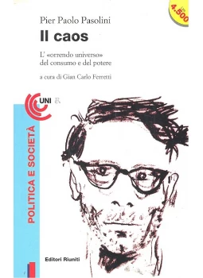
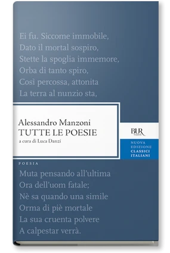
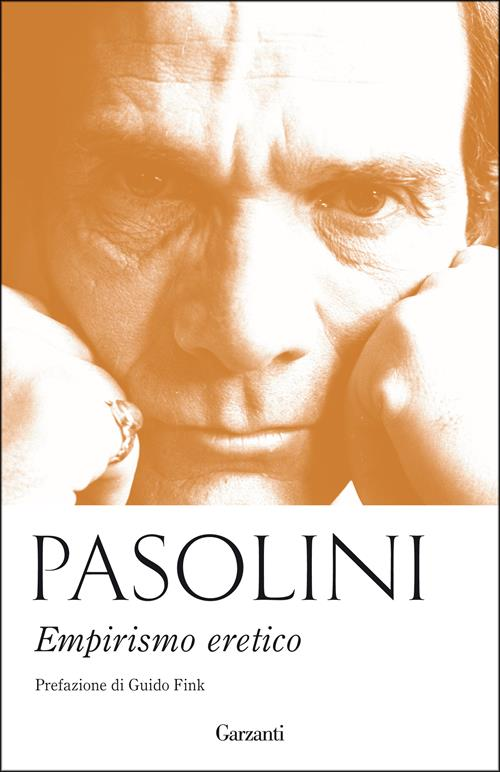

1:00:50 · 9 OPERE
Pasolini: Il Caos.
Il filo del discorso
La raccolta Il caos offre al relatore un percorso per interrogare il rapporto fra cultura, autorità e cittadinanza. Gli articoli di Pasolini vengono letti nel loro confronto con la televisione, l’industria editoriale e le istituzioni, quindi accostati alla comunicazione durante la pandemia. Nel primo nucleo, il mezzo televisivo è discusso come una relazione che può conferire autorità a chi parla e ridurre lo spettatore alla passività; la proposta pasoliniana di una maggiore pluralità serve a immaginare un ascolto critico. Il secondo tema riguarda l’indipendenza dell’intellettuale, la possibilità del compromesso e la protesta contro i premi letterari. La digressione su Bukowski ad Apostrophes mette in scena il conflitto fra marginalità e riconoscimento pubblico. Il terzo nucleo affronta la violenza di polizia e il tentativo di Pasolini di distinguere le istituzioni dalle condizioni sociali delle persone che vi lavorano. La proposta di disarmo e la rilettura della poesia sui fatti di Valle Giulia aprono una discussione sulla contrapposizione fra poveri e sul potere dei titoli giornalistici. Le denunce di un pensiero unico, le generalizzazioni sui media e il paragone delle restrizioni sanitarie con gli arresti domiciliari restano giudizi del relatore. La conclusione torna al linguaggio: una cultura critica richiede parole capaci di esprimere distinzioni, insieme a lettori disponibili a seguire un argomento oltre le formule più provocatorie.
I libri nel discorso

Il caos
Copertina: Editori Riuniti · Il caos · raccolta 1995
Fotografia autentica di Il caos, Editori Riuniti 1995, ISBN 9788835940142, con titolo e autore leggibili. Il relatore dichiara editore e anno della raccolta; l’immagine è un esemplare bibliografico di riscontro, non un fotogramma del suo volume.
Raccolta al centro dell’intero video; Editori Riuniti 1995 dichiarati, autore esplicito.
Passaggio 0:21 ↗ · Fonti e libro ↗Giornalisti, opinioni e Tv
Copertina della raccolta Il caos: Editori Riuniti · Il caos · raccolta 1995
Fotografia autentica di Il caos, Editori Riuniti 1995, ISBN 9788835940142, con titolo e autore leggibili. Il relatore dichiara editore e anno della raccolta; l’immagine è un esemplare bibliografico di riscontro, non un fotogramma del suo volume. Il riferimento catalogato è un articolo della raccolta, non un volume autonomo.
Titolo e data 28 dicembre 1968 espliciti, con lunga lettura commentata.
Passaggio 2:49 ↗ · Fonti e libro ↗Il caso di un intellettuale
Identificazione probabile
Copertina della raccolta Il caos: Editori Riuniti · Il caos · raccolta 1995
Fotografia autentica di Il caos, Editori Riuniti 1995, ISBN 9788835940142, con titolo e autore leggibili. Il relatore dichiara editore e anno della raccolta; l’immagine è un esemplare bibliografico di riscontro, non un fotogramma del suo volume. Il riferimento catalogato è un articolo della raccolta, non un volume autonomo.
La frase sull’intellettuale come buffone è riscontrata nell’articolo; titolo non pronunciato.
Passaggio 24:31 ↗ · Fonti e libro ↗Perché allo Strega no e al Festival sì
Identificazione probabile
Copertina della raccolta Il caos: Editori Riuniti · Il caos · raccolta 1995
Fotografia autentica di Il caos, Editori Riuniti 1995, ISBN 9788835940142, con titolo e autore leggibili. Il relatore dichiara editore e anno della raccolta; l’immagine è un esemplare bibliografico di riscontro, non un fotogramma del suo volume. Il riferimento catalogato è un articolo della raccolta, non un volume autonomo.
Lungo passo sul ritiro dallo Strega identificabile nell’articolo del 27 agosto 1968; titolo non pronunciato.
Passaggio 26:24 ↗ · Fonti e libro ↗
Il cinque maggio
Identificazione probabile
Copertina della raccolta Tutte le poesie: BUR · Tutte le poesie · a cura di Luca Danzi, 2012
Copertina autentica della raccolta BUR 2012 curata da Luca Danzi, che contiene Il cinque maggio alle pp. 427–438. Il componimento è un’ode, non una monografia intitolata Tutte le poesie.
Allusione alla formula dalle Alpi alle piramidi, usata in una digressione sui premi; titolo e autore non espliciti.
Passaggio 31:10 ↗ · Fonti e libro ↗
Risposta alla domanda: che cos’è l’Illuminismo?
Identificazione probabile
Copertina della raccolta che comprende il saggio sull’Illuminismo: Firenze University Press · Sette scritti politici liberi · 2011 · a cura di Maria Chiara Pievatolo
Copertina del volume cartaceo FUP che comprende il saggio, riscontrato dal catalogo universitario. L’ISBN appartiene alla raccolta; il filmato non annuncia un’edizione e il titolo del saggio è un’identificazione probabile della citazione.
Kant, tema dell’Illuminismo e motto sull’uso del proprio intelletto identificano il saggio; titolo non pronunciato.
Passaggio 32:35 ↗ · Fonti e libro ↗Per una polizia democratica
Copertina della raccolta Il caos: Editori Riuniti · Il caos · raccolta 1995
Fotografia autentica di Il caos, Editori Riuniti 1995, ISBN 9788835940142, con titolo e autore leggibili. Il relatore dichiara editore e anno della raccolta; l’immagine è un esemplare bibliografico di riscontro, non un fotogramma del suo volume. Il riferimento catalogato è un articolo della raccolta, non un volume autonomo.
Titolo e data 21 dicembre 1968 espliciti, con lunga lettura commentata.
Passaggio 36:23 ↗ · Fonti e libro ↗
Il PCI ai giovani!!
Identificazione probabile
Copertina della raccolta Empirismo eretico: Garzanti · Empirismo eretico · raccolta 2015
Copertina autentica della raccolta Empirismo eretico, edizione Garzanti 2015, ISBN 9788811688952, che contiene il componimento. Non è una copertina autonoma della poesia; questa edizione non viene attribuita al video.
Valle Giulia, poliziotti figli dei poveri e storia della pubblicazione identificano il componimento; titolo non pronunciato.
Passaggio 51:21 ↗ · Fonti e libro ↗I capelli goliardici
Identificazione probabile
Copertina della raccolta Il caos: Editori Riuniti · Il caos · raccolta 1995
Fotografia autentica di Il caos, Editori Riuniti 1995, ISBN 9788835940142, con titolo e autore leggibili. Il relatore dichiara editore e anno della raccolta; l’immagine è un esemplare bibliografico di riscontro, non un fotogramma del suo volume. Il riferimento catalogato è un articolo della raccolta, non un volume autonomo.
Lettura dell’autodifesa sulla ricezione nei diversi periodici, riconoscibile nell’articolo del 17 maggio 1969; titolo non pronunciato.
Passaggio 52:35 ↗ · Fonti e libro ↗